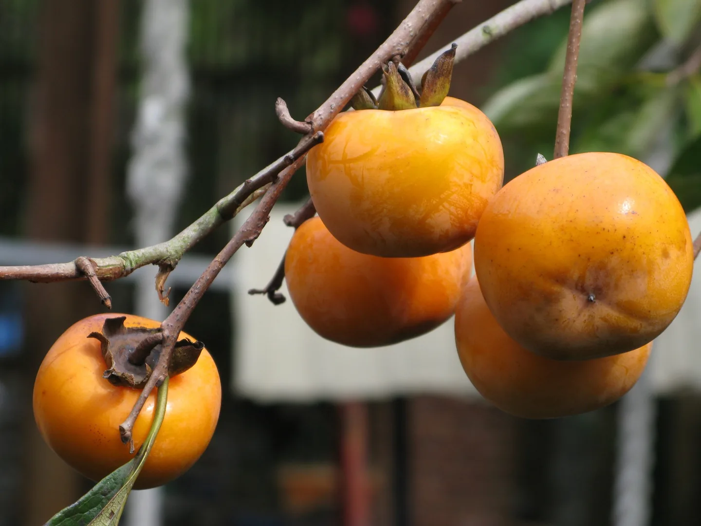
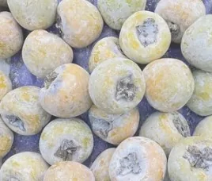
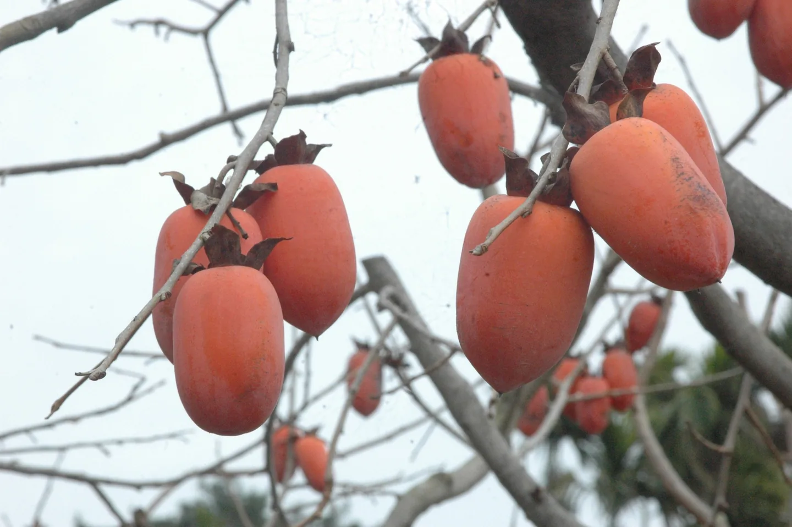
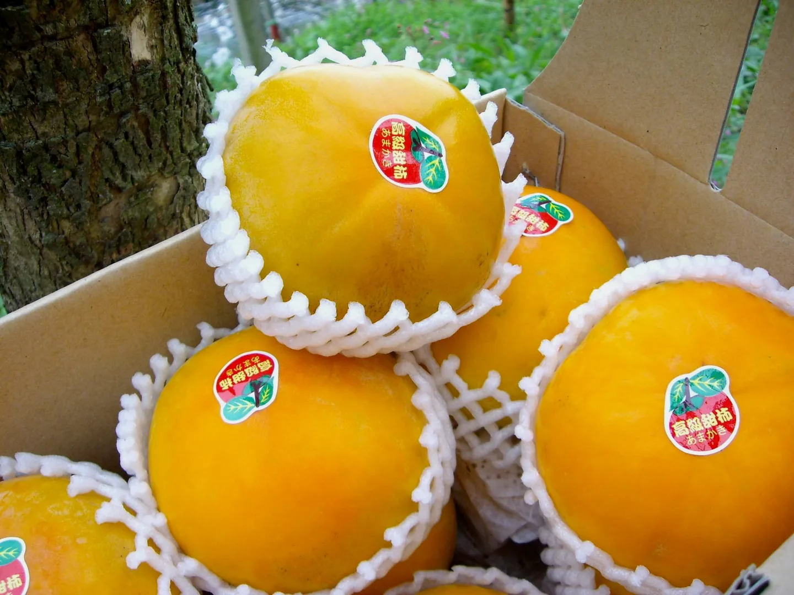
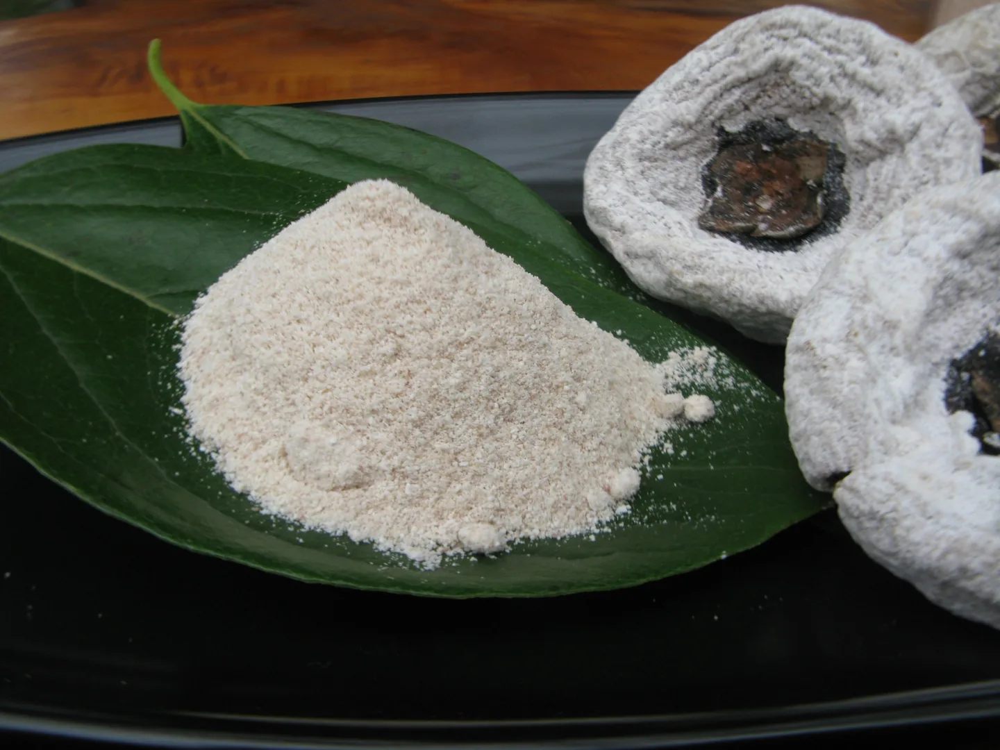

牛心柿
果實圓大，主要產於嘉義。屬澀柿，可製成水柿與柿餅。

Persimmon field notes
果形、澀味、產季與加工方式各不相同。認識品種，也就更懂一盤柿餅從哪裡來。

先釐清一件事
兩者是依處理方式與食用狀態形成的產品名稱。同一個澀柿品種，也可能走向清脆或柔軟的不同口感。
Seven varieties
以下依現有園區資料整理。產季會受到氣候與產區條件影響，時間為概略參考。
果實圓大，主要產於嘉義。屬澀柿，可製成水柿與柿餅。
新竹代表性澀柿，果實小而圓，適合製作紅柿與柿餅。

源自日本，台灣多見於新社、東勢；果形細長，具有良好膠質與嚼感。

果形較扁，表面常見四道明顯溝紋，多以紅柿方式食用。

包含多個日本品種，屬非澀柿，成熟後可直接清脆食用。

又稱姬柿，果實造型富趣味，主要作為觀賞植物，不供食用。

台灣原生植物，又稱台灣黑檀；果實帶細毛與香氣，主要作觀賞用途。

A small detail
柿子在乾燥與熟成過程中，內部糖分會隨水分移動並在表面形成白色結晶。這層天然柿霜，是時間與水分變化留下的痕跡。